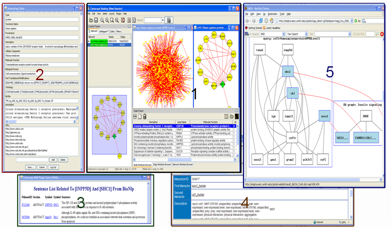

Cytoscape Plugin for MiMI
Cytoscape is a widely used open source software tool for the analysis of bimolecular interaction networks. The power of Cytoscape is most apparent when it is coupled to databases of protein-protein, protein-DNA, and genetic interactions. Protein interaction data exists in many repositories, each with its own data format, molecule identifier and supplementary information. MiMI integrates data from multiple well-known protein interaction databases using an intelligent deep-merging approach. The two resources complement each other well. To facilitate access to the molecular interaction data assembled in MiMI from the Cytoscape user interface, and to allow biological users to readily explore and analyze interaction data from MiMI, we have implemented a Cytoscape plug-in that communicates with the MiMI database.
The Cytoscape MiMI Plugin retrieves molecular interactions and interaction attributes from MiMI and displays the interaction networks and attributes using Cytoscape. By integrating with a biology nature language processing database (BioNLP) and a multi-document summarization system MEAD, the plugin provides users literature information associated with interactions, and summarization (sorted) of the literature information. MiMI Plug-in also integrates with a graph matching tool (SAGA) for chosen networks graphic match against biological pathways. This plug-in provides users an interactive molecule and interaction annotation editor for users to add their own node/edge annotations.
Cite MiMI Plugin:
Jing Gao, Alex S. Ade, V. Glenn Tarcea, Terry E. Weymouth, Barbara R. Mirel, H.V. Jagadish, and David J. States
Integrating and Annotating the Interactome using the MiMI plugin for Cytoscape
Bioinformatics 2009 25(1):137-138, PMID: 18812364
